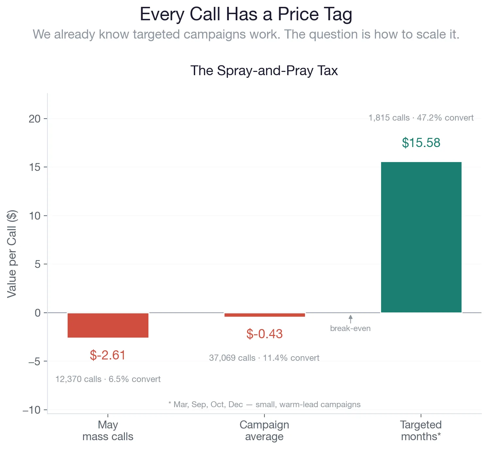
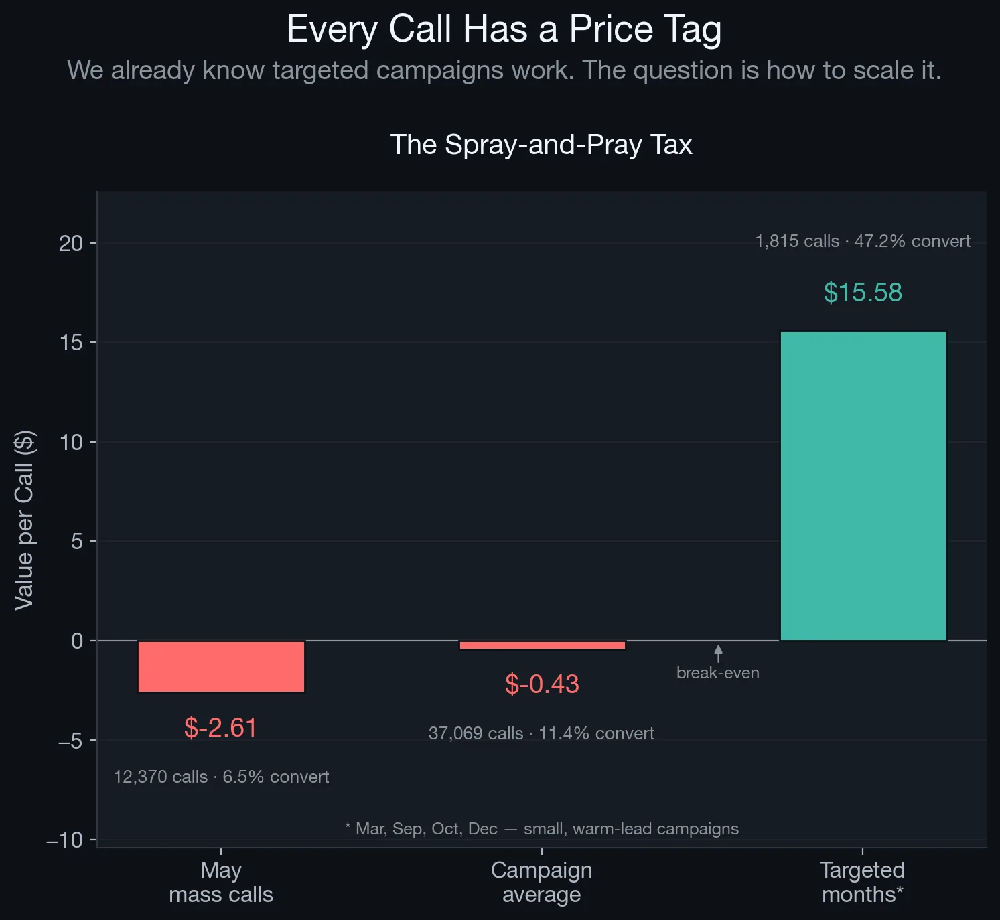
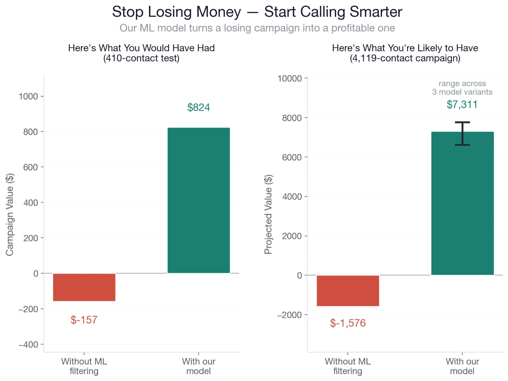
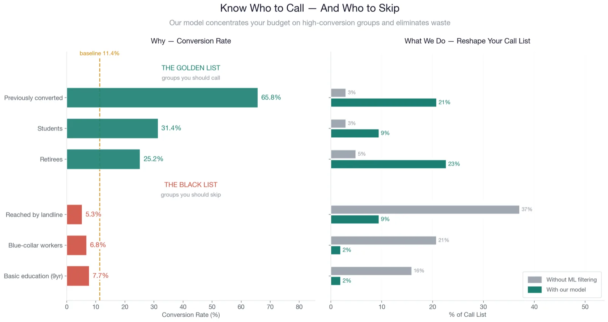
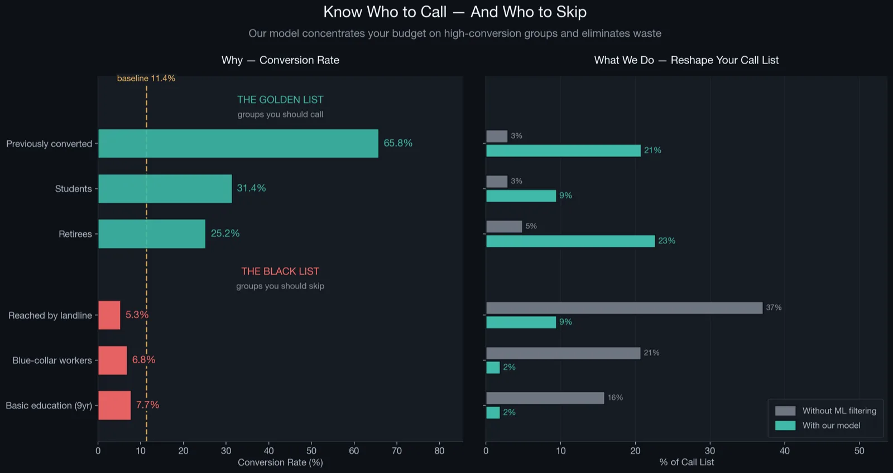

Most bank sales calls fail. Instead of asking which model is most accurate, we asked which customers are worth the call, and scored every model in dollars.
- Campaign value
- $824.50410-contact holdout (calling everyone: −$156.92)
- Call precision
- 47.2%of our calls reached a subscriber, vs 11.5% when calling everyone
- Contacts called
- 53 of 410chosen by our best model
- Projected value
- $6,628–$7,775on the 4,119-contact holdout, across three models
The problem
A Portuguese retail bank sells term deposits by phone, and most calls fail: only about 11% of contacts subscribe. A model that always predicts “no” is about 89% accurate and earns nothing, so accuracy was the wrong target. We scored every model by campaign value instead. Each call costs $5.50 (30 minutes at $11/hour), and each subscriber is worth $44.64 to the bank ($4,960 in average savings, 75% placed in a term deposit, 1.2% net interest margin). The question became: which customers are worth the call?
The data
We used the UCI Bank Marketing dataset: 37,069 past calls with 19 input features. They cover demographics (age, job, marital status, education, default, housing and personal loans), contact details (phone type, month, day of week), campaign history (calls this campaign, days since last contact, previous outcome) and five macroeconomic indicators such as the Euribor rate and employment level.
Only 11.4% of calls ended in a subscription. Over the whole training campaign, calling everyone lost $16,034.38, about −$0.43 per call. Models were graded on a 410-contact mini holdout with known answers. A 4,119-contact holdout without answers was used only for projections.


Our approach
We built three classifiers in scikit-learn. Two are random forests (max depth 5) trained on SMOTE-oversampled data, one with a mild class weight (1:1.5) and one with a balanced class weight. The third is a stacking ensemble: a balanced random forest and a 3-nearest-neighbor model feed a class-weighted logistic regression, with standardized numeric features and one-hot categoricals.
We dropped month from every model to avoid temporal leakage and turned the “never contacted” placeholder (999 days) into a flag for the random forests. We then raised the stacker’s decision threshold to 0.61, so it calls only customers it is fairly confident about. Fewer, better calls was the whole strategy.
Results
On the 410-contact holdout, every model beat calling everyone, and the stacking ensemble did best by calling the fewest people. It called 53 contacts, reached 25 subscribers and earned $15.56 per call.
| Model | Calls | Subscribers reached | Precision | Campaign value |
|---|---|---|---|---|
| Call everyone | 410 | 47 | 11.5% | −$156.92 |
| RF + SMOTE, mild weight | 129 | 31 | 24.0% | $674.34 |
| RF + SMOTE, balanced weight | 82 | 28 | 34.1% | $798.92 |
| Stacking ensemble (RF + KNN → LR) | 53 | 25 | 47.2% | $824.50 |


What we learned
Choosing the metric mattered more than choosing the model. Once a call had a price, the right move was to call fewer people more selectively, and the best model left 87% of the list uncalled. The models also learned what the data already hinted at: previous subscribers convert at 65.8%, students at 31.4% and retirees at 25.2%, while landline contacts convert at only 5.3%.


Afterward, a cross-validated feature-ablation study showed that our single train/test split was noisy. Dropping day_of_week and job lifted the random forest from $796 to $810 per 410 contacts under 3-fold cross-validation, a gain we did not get into the submitted models.
Team, tools and code
Team NorthWind
- Caleb Dilley
- Dallin Wagner
- Jonathan Oliphant
- Nels Buhrley
A team project for CSE 450 Machine Learning at BYU-Idaho, Spring 2026.
Source: Source on GitHub · Team project site